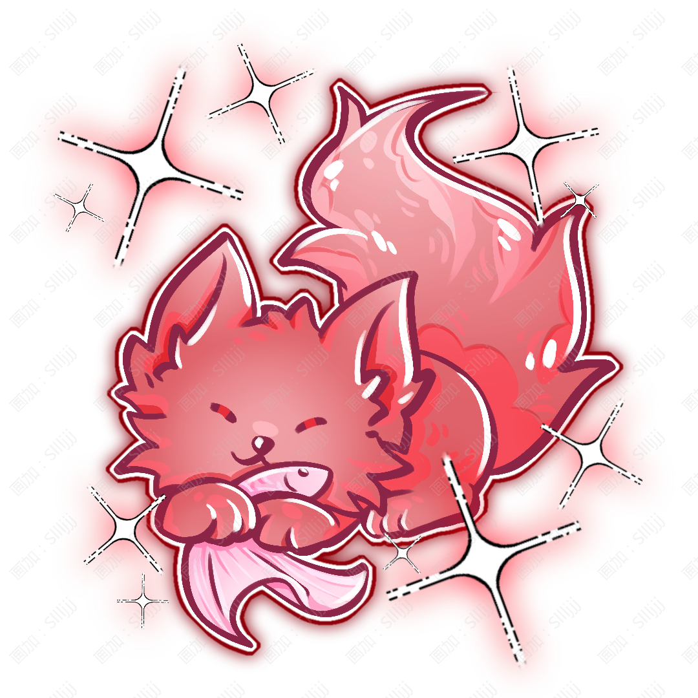

Luoliao
洛燎

姓名：洛燎。
英文：Luoliao。
種族：人類。
性別：女。
生日：6月23日。
年齡：19歲與泉先相識；現年齡50歲。
出身與現居：出生於晞曜國雲衍城，幼年成爲孤兒；現與泉先共同生活；工作日往返學院。
身高：181cm。
體重：82kg。
火紅色捲髮與火紅色眼睛，臉上有一個反向感嘆號形狀的紋樣。因爲幼年與火火締結靈契，她的瞳孔受到靈契影響，變成了類似狐狸的狹縫狀。平時表情不多，即使沒有生氣，看起來也經常像是在冷着臉，因此第一次見到她的人很容易覺得她不好接近。
外冷內熱、警惕、直接，不擅長主動表達關心。
她很少輕易相信陌生人，也討厭別人因爲她過去的經歷而特別同情她。
真正熟悉以後會發現她其實非常容易對弱小的人或動物心軟，只是幫助別人以後往往裝作自己只是“順手”。面對火火時幾乎完全沒有平時那種冷淡，而在泉先面前也會明顯更加放鬆。
世界頂尖綜合學院教師；小蘼所在班級班主任；負責靈紋基礎、危險靈紋辨識以及部分實戰課程。
研究古老靈紋、拆解廢棄靈紋器、收集奇怪的舊零件、給火火梳毛；
很喜歡看火焰燃燒時不斷變化的形狀，但絕對不會承認自己能盯着看很久。
研究清楚那些被誤解、遺失或被錯誤使用的古老靈紋，並希望有一天能夠建立一套更加完善的危險靈紋鑑定方式，讓類似自己童年經歷的事情不再因爲無知與恐懼發生。
古老靈紋、火屬性靈紋、靈紋結構拆解與修復、危險靈紋辨識；
戰鬥時擅長近距離高爆發攻擊。
力量：★★★★★
體力：★★★★☆
智慧：★★★☆☆
魅力：★★★☆☆
幸運：★★☆☆☆
武器：摺疊式靈紋尺，火爐。
属性：火
技能：
「燎痕」
洛燎展開靈紋尺，迅速在地面或物體表面劃出一道火屬性靈紋。火爐中的火屬性沿着紋路蔓延，使整條靈紋依次燃起。她可以提前改變靈紋的走向，因此火焰能夠轉彎、分叉，甚至繞過障礙攻擊。
「焰陣」
洛燎利用靈紋尺快速確定數個位置，並在周圍佈置小型火屬性靈紋。完成後，她可以通過火爐統一連接這些靈紋，並決定它們分別啓動或同時啓動，用於封鎖道路、阻止敵人靠近或製造撤離空間。
「返火」
洛燎展開火爐，將附近已經存在的火屬性力量吸引至爐中的靈紋結構，再重新改變其釋放方向。她尤其擅長處理失控的火屬性，可以將正在擴散的火焰重新集中、引向安全區域或暫時壓制。
大招「焚紋」
洛燎將摺疊式靈紋尺完全展開，以自己爲中心迅速完成大型火屬性靈紋的關鍵結構，同時啓動火爐。
火爐中的火屬性沿着她劃出的紋路向四周擴散，大量細小靈紋依次亮起，將周圍區域分割成數個由洛燎控制的火焰區域。
她可以讓不同區域依次啓動，改變敵人的行動方向；最後再讓所有靈紋同時連接，火焰沿着完整陣紋集中匯聚。
特殊能力：當洛燎與火火在附近共同戰鬥時，靈契會使雙方的火屬性產生互補。火火能夠感知洛燎已經繪製好的靈紋，並主動讓自己的火焰沿着靈紋移動；洛燎也可以將火火產生的火焰暫時引入火爐，再通過火爐分配到不同靈紋之中。因此她甚至可以一邊用靈紋尺繼續繪製新的陣紋，一邊讓火火負責爲已經完成的部分提供火屬性。兩者從五歲起便共同生活，這種配合幾乎不需要提前交流。
火火
種類：罕見火狐狸靈獸。
屬性：火。
火火擁有火紅色的毛髮，耳尖、尾尖與四肢末端顏色更深，眼睛呈明亮的金紅色。它可以自由改變體型，小的時候能夠被洛燎抱在懷裏，大型狀態則足以載着洛燎奔跑。
火火原本生活在晞曜國偏遠地區。幼年時期因爲無法完全控制自身屬性，無意間使附近長期出現難以熄滅的異常火焰。
它並不知道人類因此產生了恐懼，也不知道那些人最終會將這種恐懼轉移到洛燎身上。
第一次看見洛燎時，火火只是以爲她誤入了火焰之中。
它衝進去救她，也因此在強烈的火焰靈性中與處於靈魂窗期的洛燎產生共鳴。
從那以後，它再也沒有離開過洛燎。
火火性格活潑、好奇，和洛燎幾乎完全相反。它很喜歡主動靠近別人，也很容易被食物吸引，經常讓第一次見到它的人懷疑——爲什麼這麼熱情的一隻狐狸，會跟着一個看起來這麼難接近的人。
能力：
「焰躍」：火火能夠讓火焰短暫包裹身體並快速衝向另一個位置，在移動路徑上留下火焰痕跡。
「狐火」：釋放數團小型火焰懸浮在周圍。狐火能夠跟隨火火移動，也可以被洛燎的靈紋引導，用於照明、警戒或戰鬥。